สไลด์ต้นฉบับของตอนนี้ (หน้า 2–14)


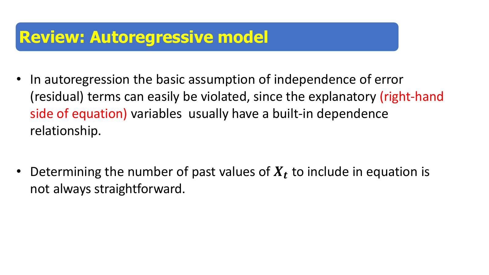
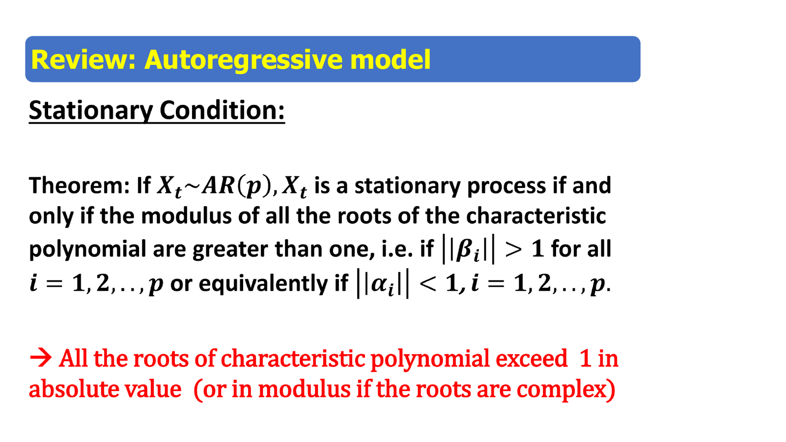
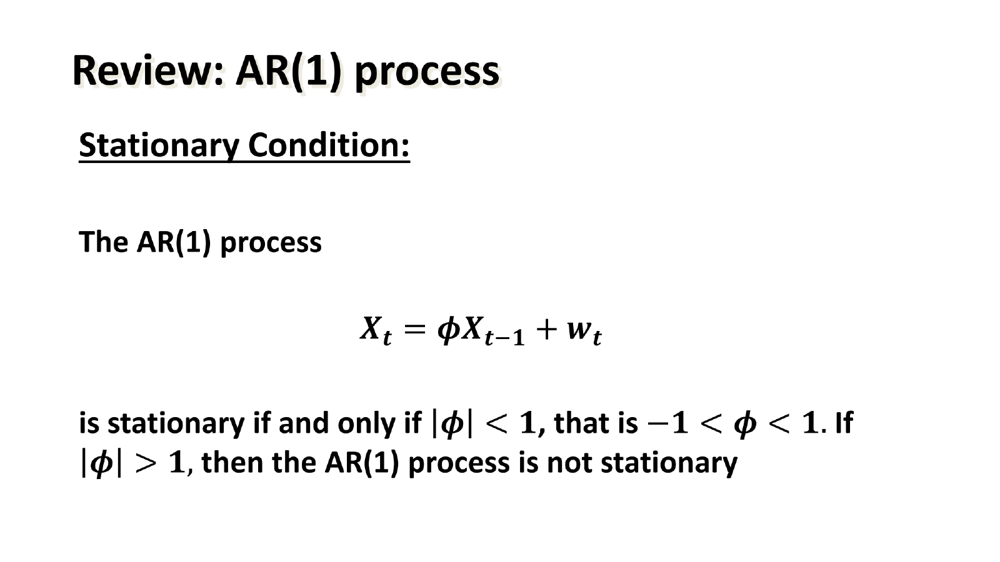

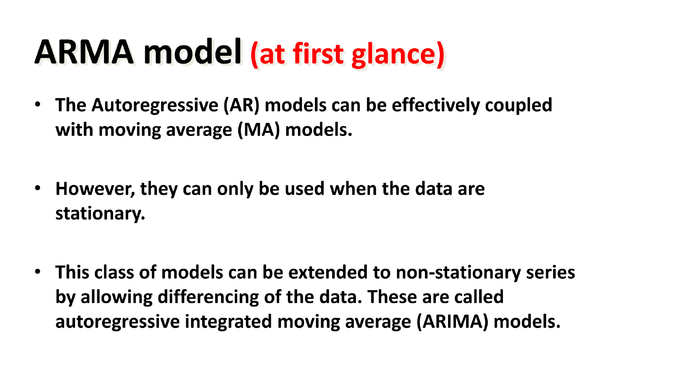
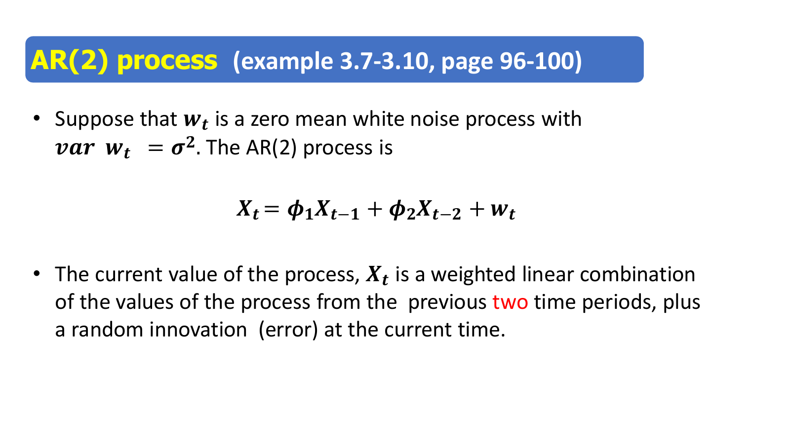

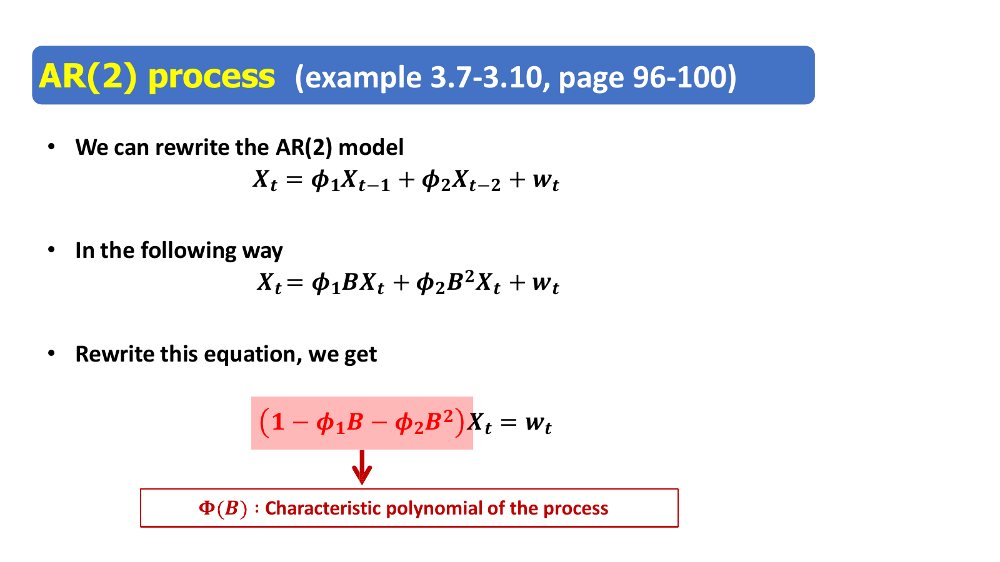

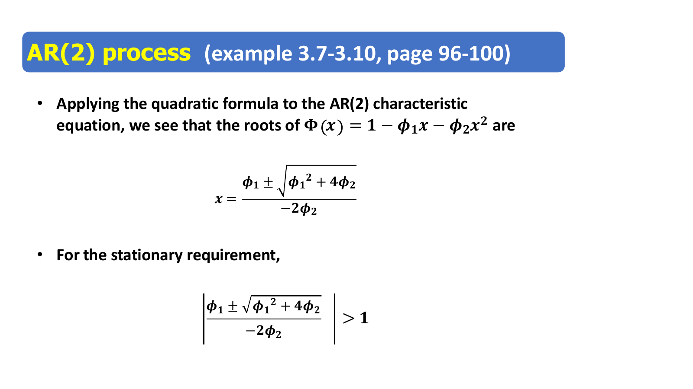
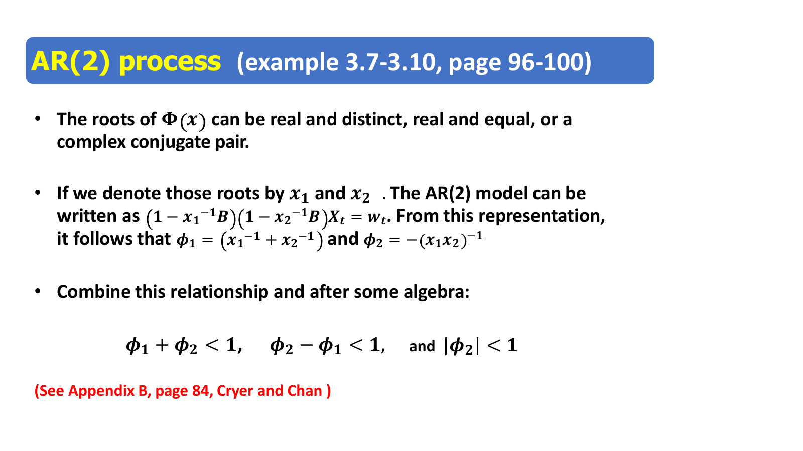
Slide 6 — Model for Stationary Time Series (Part 2)
Lesson 5 จบที่ปัญหาสองข้อ ข้อแรก ACF บอก q ของ MA ได้ แต่บอก p ของ AR ไม่ได้ เพราะ ACF ของ AR ทุกอันดับค่อย ๆ ลดลงเหมือนกัน ข้อที่สอง AR ใช้ได้กับข้อมูลนิ่งเท่านั้น บทนี้แก้สองปัญหานั้นตามลำดับ เริ่มจาก AR(2) ซึ่ง φ ใช้ค่าอะไรก็ได้ไม่ได้ ต้องอยู่ในบริเวณสามเหลี่ยมที่มาจากรากของ Φ(x) จากนั้นคือ PACF ซึ่งตัดผลของ lag ที่อยู่ตรงกลางออก ทำให้ AR(p) มี PACF ตัดหลัง lag p แล้วสรุปเป็นตารางว่า AR ตัดที่ PACF MA ตัดที่ ACF และ ARMA ไม่ตัดทั้งคู่ สุดท้ายคือ ARIMA(p,d,q) ซึ่งเติม differencing d ครั้งให้ใช้กับข้อมูลที่มี trend ได้ \(\Phi(B)(1-B)^dX_t=\theta(B)w_t\) พร้อมกับดักที่ชอบออกสอบ คือสมการที่ดูเหมือน AR(2) หรือ ARMA(2,2) แต่แยกตัวประกอบแล้วได้ \((1-B)\) จึงเป็น ARIMA
ข้อสอบมีสองภาค คือภาค concept และภาคปฏิบัติกับข้อมูลจริงซึ่งใช้ auto.arima1 และปีหลัง ๆ เน้น application มากกว่าทฤษฎี2 ข้อสอบเก่าเคยให้กราฟ ACF หรือ scatter plot มาให้ดูว่าเป็นโมเดลอะไร ส่วนที่ MA ไม่ค่อยมีใครทำผิด แต่ที่ยากคือเมื่อ AR กับ MA ผสมกัน3
ทบทวนก่อน MA(q) เขียนเป็น \(X_t=\theta(B)w_t\) โดย 𝜽(𝑩) คือ \(1+\theta_1B+\dots+\theta_qB^q\) ค่า \(X_t\) เป็นผลรวมของ shock ปัจจุบันกับย้อนหลัง q ช่วง ACF จึงเป็นศูนย์หลัง lag q เช่น MA(1) ที่ θ = −0.9 มี \(\rho_1=-0.9/1.81=-0.497\) แล้ว lag 2 เป็นต้นไปเป็นศูนย์4 AR(p) เขียนเป็น \(\Phi(B)X_t=w_t\) โดย \(\Phi(B)=1-\phi_1B-\dots-\phi_pB^p\) ซึ่งตัวแปรด้านขวาของสมการเดิมคือ X ย้อนหลังที่เป็นตัวแปรสุ่ม ไม่ใช่ shock ที่อิสระกัน สไลด์ชี้ปัญหาของ autoregression สองข้อ ข้อแรก ตัวแปรด้าน (right-handside of equation) คือ \(X_{t-1},X_{t-2},\dots\) สัมพันธ์กันเอง เช่น AR(1) ที่ φ = 0.9 มี \(X_{t-1}\) กับ \(X_{t-2}\) สัมพันธ์กันถึง 0.9 สมมติฐานของ regression ทั่วไปจึงใช้ตรง ๆ ไม่ได้ ข้อสอง การเลือกว่าจะใส่ X ย้อนหลังกี่ตัว (p) ไม่ง่าย ซึ่งคือเหตุผลที่ต้องมี PACF ในตอนที่ 3
ทฤษฎีบทจาก Lesson 5 คือ AR(p) นิ่งก็ต่อเมื่อรากของ characteristic polynomial ทุกตัวมีค่าสัมบูรณ์เกิน 1 หรือ modulus เกิน 1 ถ้าเป็นจำนวนเชิงซ้อน ตัวอย่างที่ใช้ซ้ำทั้งบทคือ \(\Phi(x)=1-1.1x+0.3x^2=(1-0.5x)(1-0.6x)\) ซึ่งมีราก 2 และ 1.667 เกิน 1 ทั้งคู่จึงนิ่ง สำหรับ AR(1) ราก \(1/\phi\) เกิน 1 เมื่อ \(|\phi|<1\) φ จึงเป็นค่าอิสระไม่ได้ ค่าที่ R หรือ Python ประมาณได้จะอยู่ในช่วงนี้ ถ้าเกินช่วง ผลจะไม่ converge5 เช่น φ = 1.2 เริ่มที่ \(X_0=1\) โดยไม่มี shock จะได้ 1.2, 1.44, 1.73, 2.07 โตขึ้นเรื่อย ๆ ไม่กลับมาที่ค่าเฉลี่ย ส่วน φ = 0.8 ได้ 0.8, 0.64, 0.51 ค่อย ๆ กลับสู่ศูนย์ นี่คือความหมายเชิงภาพของความนิ่ง ARMA(p,q) รวมสองส่วนเป็น \(\Phi(B)X_t=\theta(B)w_t\) ARMA(p,0) คือ AR(p) และ ARMA(0,q) คือ MA(q)6 เช่น \(X_t=0.6X_{t-1}+w_t+0.8w_{t-1}\) คือ \((1-0.6B)X_t=(1+0.8B)w_t\) ARMA ใช้ได้เมื่อข้อมูลนิ่งเท่านั้น คือไม่มี trend ไม่มี seasonal และ variance คงที่7 ข้อมูลจริงที่ไม่นิ่งที่พบบ่อยมีสองแบบ แบบแรกมี trend ซึ่งพบบ่อยมากและแก้ด้วย differencing กลายเป็น ARIMA ในตอนที่ 4 แบบที่สองแกว่งไม่เท่ากัน ซึ่งต้องใช้ log หรือโมเดล variance (ARCH/GARCH) ที่จะเรียนทีหลัง8
AR(2) คือ \(X_t=\phi_1X_{t-1}+\phi_2X_{t-2}+w_t\) ค่าปัจจุบันเป็นผลรวมถ่วงน้ำหนักของสองค่าก่อนหน้าบวก shock ใหม่ ถ้า φ₁ = 1.1 และ φ₂ = −0.3 ค่าวันนี้ตามเมื่อวานไปแรง (1.1) แต่ถูกดึงกลับด้วยค่าเมื่อวานซืน (−0.3) ผลรวม 0.8 น้อยกว่า 1 อนุกรมจึงกลับสู่ค่าเฉลี่ยได้ สมมติฐานเหมือน AR(1) คือ mean เป็นศูนย์ (ถ้าไม่ใช่ให้ใช้ \(X_t-\mu\)) และ \(w_t\) อิสระจาก \(X_{t-k}\) ทุก k ≥ 1 สไลด์ยอมรับว่าเรื่องความนิ่งของ AR(2) ขึ้นไป becomes very theoretical จึงสอนเฉพาะจุดสำคัญคือเงื่อนไขสามเหลี่ยม9 แทน \(X_{t-1}=BX_t\) และ \(X_{t-2}=B^2X_t\) แล้วย้ายข้างจะได้ \((1-\phi_1B-\phi_2B^2)X_t=w_t\) วงเล็บนี้คือ 𝟏−𝝓𝟏𝑩−𝝓𝟐𝑩𝟐 หรือ 𝚽𝑩∶ Characteristic polynomial of the process เช่น \(X_t=1.1X_{t-1}-0.3X_{t-2}+w_t\) ได้ \(\Phi(B)=1-1.1B+0.3B^2\) φ₂ = −0.3 กลายเป็น +0.3 ในพหุนามเพราะมีเครื่องหมายลบนำหน้า จุดนี้เป็นที่มาของความผิดพลาดเรื่องเครื่องหมายบ่อยที่สุด
เพื่อหาราก ให้มอง B เป็นตัวแปรธรรมดา x แล้วแก้ \(1-\phi_1x-\phi_2x^2=0\) ความนิ่งดูจาก ; i.e. the roots of𝚽𝒙. ในห้องมักเขียน B ส่วนหนังสือเขียน x หรือ z10 นี่คือทฤษฎีเดียวของวิชาที่ต้องใช้คณิต11 คือแก้สมการกำลังสอง ข้อสอบเคยออกเป็นกำลังสามแล้วจาก 40 คนทำได้เพียง 2 คน จึงจะออกแค่กำลังสอง12 สูตรรากของ \(ax^2+bx+c=0\) คือ \(x=\dfrac{-b\pm\sqrt{b^2-4ac}}{2a}\) ถ้า \(b^2-4ac\ge0\) รากเป็นจำนวนจริง ถ้าน้อยกว่า 0 รากเป็นจำนวนเชิงซ้อน \(u\pm vi\) มี modulus \(\sqrt{u^2+v^2}\) ซึ่งถ้ายังไม่เข้าใจจำนวนเชิงซ้อนก็ข้ามไปก่อนได้13 เพราะข้อสอบส่วนใหญ่เป็นรากจริง สำหรับ \(\Phi(x)=-\phi_2x^2-\phi_1x+1\) ได้ \(a=-\phi_2\), \(b=-\phi_1\), \(c=1\) แทนในสูตรได้ \(x=\dfrac{\phi_1\pm\sqrt{\phi_1^2+4\phi_2}}{-2\phi_2}\) ตรงกับสไลด์ ตรวจกับ φ = (1.1, −0.3) ได้ \(\phi_1^2+4\phi_2=1.21-1.2=0.01\) ราก \(=\dfrac{1.1\pm0.1}{0.6}\) คือ 2 และ 1.667 นิ่ง ตรวจกับ φ = (0.5, −0.5) ได้ \(0.25-2=-1.75<0\) รากเชิงซ้อน \(0.5\pm1.323i\) มี modulus \(\sqrt{0.25+1.75}=1.414\) นิ่ง
ถ้าเรียกรากว่า \(x_1,x_2\) จะเขียน AR(2) ได้เป็น \((1-x_1^{-1}B)(1-x_2^{-1}B)X_t=w_t\) กระจายแล้วเทียบสัมประสิทธิ์ได้ \(\phi_1=x_1^{-1}+x_2^{-1}\) และ \(\phi_2=-x_1^{-1}x_2^{-1}\) เมื่อรวมกับเงื่อนไข \(|x_i|>1\) จะได้เงื่อนไขสามข้อที่ใช้แทนการหาราก
\(\phi_1+\phi_2<1,\qquad \phi_2-\phi_1<1,\qquad |\phi_2|<1\)
เงื่อนไขนี้ต้องจด ถ้าข้อใดข้อหนึ่งไม่จริง โมเดลนั้นไม่ใช่ AR(2) และอาจเป็นกับดักในข้อสอบ14 ที่มาของเงื่อนไขอยู่ใน (See Appendix B, page 84, Cryer and Chan ) ไม่ต้องพิสูจน์ในวิชานี้
1.1 − 0.3 = 0.8 < 1, −0.3 − 1.1 = −1.4 < 1, |−0.3| < 1 ครบทั้งสามข้อ นิ่ง ตรงกับราก 2 และ 1.667
−0.25 < 1, 0.25 + 0.5 = 0.75 < 1, 0.25 < 1 นิ่ง ราก −1.236 และ 3.236 ค่าสัมบูรณ์เกิน 1 ทั้งคู่
1.7 − 0.7 = 1 ไม่น้อยกว่า 1 ไม่ใช่ AR(2) ที่นิ่ง แยกตัวประกอบได้ \((1-0.7x)(1-x)\) มีราก 1 พอดี (ตอนที่ 4)
0.5 + 0.6 = 1.1 ไม่นิ่ง แม้ φ แต่ละตัวจะน้อยกว่า 1
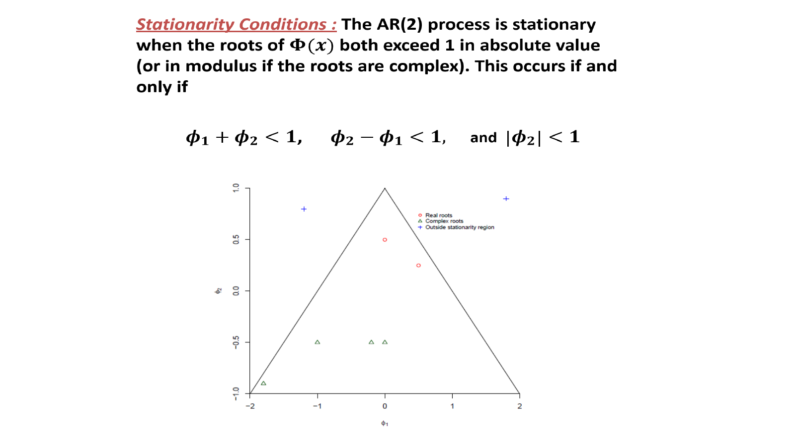
เงื่อนไขสามข้อคือเส้นตรงสามเส้น \(\phi_2=1-\phi_1\), \(\phi_2=1+\phi_1\) และ \(\phi_2=-1\) ซึ่งล้อมเป็นสามเหลี่ยมที่มีจุดยอด (0, 1), (2, −1) และ (−2, −1)15 จุดใดอยู่ในสามเหลี่ยมคือ AR(2) ที่นิ่ง เช่น (1.8, 0.9) อยู่นอกเพราะ 1.8 + 0.9 = 2.7 เกิน 1 ภายในสามเหลี่ยมยังแบ่งได้อีกสองส่วนด้วยเส้นโค้ง \(\phi_1^2+4\phi_2=0\) จุดที่อยู่เหนือเส้นโค้ง เช่น (0.5, 0.25) ซึ่ง \(0.25+1=1.25>0\) มีรากจริง ส่วนจุดที่อยู่ใต้เส้นโค้ง เช่น (0, −0.5) ซึ่ง \(0-2<0\) มีรากเชิงซ้อน ซึ่งทำให้ ACF เป็นคลื่นในตอนถัดไป








ACF ของ AR(1) หาได้ด้วยทริกความนิ่งใน Lesson 5 AR(2) ใช้ทริกเดียวกัน แต่ได้เป็นสูตรวนซ้ำ (recursion) แทนสูตรปิด ขั้นแรก คูณทั้งสองข้างของ AR(2) ด้วย \(X_{t-h}\) แล้วหาค่าคาดหมาย ได้ 𝑬(𝑿𝒕𝑿𝒕−𝒉) = 𝝓𝟏𝑬(𝑿𝒕−𝟏𝑿𝒕−𝒉) + 𝝓𝟐𝑬(𝑿𝒕−𝟐𝑿𝒕−𝒉) + 𝑬(𝒘𝒕𝑿𝒕−𝒉) เนื่องจาก mean เป็นศูนย์ \(E(X_tX_{t-h})\) คือ \(\gamma_h\) พอดี และพจน์สุดท้ายเป็นศูนย์เมื่อ h ≥ 1 เพราะ shock ใหม่ \(w_t\) อิสระจากค่าในอดีต จึงได้ \(\gamma_h=\phi_1\gamma_{h-1}+\phi_2\gamma_{h-2}\) และเมื่อหารด้วย \(\gamma_0\) ได้ \(\rho_h=\phi_1\rho_{h-1}+\phi_2\rho_{h-2}\) ซึ่งเรียกว่า Yule-Walker equations สมการนี้เป็นสมบัติของ AR ทุกอันดับ AR(1) คือ \(\rho_s=\phi\rho_{s-1}\) และ AR(3) เพิ่ม \(\phi_3\rho_{s-3}\)16 สมัยก่อนใช้สมการนี้ประมาณ φ แต่ปัจจุบันให้โปรแกรมประมาณให้ จึงไม่ได้เน้น17
\(\rho_1=\phi_1\rho_0+\phi_2\rho_{-1}=\phi_1+\phi_2\rho_1\) จึงได้ \(\rho_1=\dfrac{\phi_1}{1-\phi_2}=\dfrac{1.1}{1.3}=0.846\)
\(\rho_2=\phi_1\rho_1+\phi_2\rho_0=1.1(0.846)-0.3=0.931-0.3=0.631\)
\(\rho_3=1.1(0.631)-0.3(0.846)=0.694-0.254=0.440\)
ρ₄ = 0.295, ρ₅ = 0.192, ρ₆ = 0.123 ลดลงแต่ไม่เป็นศูนย์ ตรงกับ ARMAacf(ar = c(1.1, -0.3))
สไลด์บอกว่ามีสูตร closed-form expression ของ ACF AR(2) ใน Shumway ( (i)-(iii) ,page99 ) แยกสามกรณีตามชนิดราก ทุกกรณีให้ \(\rho(h)\to0\) เมื่อ h เพิ่มขึ้น และสูตรช่วยให้รู้รูปร่างของ ACF เพื่อนำไปเทียบกับ sample ACF รูปร่างสรุปได้ว่า ACF ของ AR(2) ลดลงแบบเลขชี้กำลังเสมอ และเมื่อรากเป็นจำนวนเชิงซ้อน \(\rho_h\) จะขึ้นลงเป็นคลื่นที่ค่อย ๆ เล็กลง เรียกว่า damped sine wave รากเชิงซ้อนทำให้แต่ละก้าวเหมือนหมุนไปบางมุมพร้อมกับหดลงด้วย modulus ค่าจึงวนบวกลบเป็นรอบ สไลด์ให้สี่กรณีที่อยู่ในสามเหลี่ยมทั้งหมด จึงนิ่งทุกกรณี แต่ชนิดรากต่างกัน
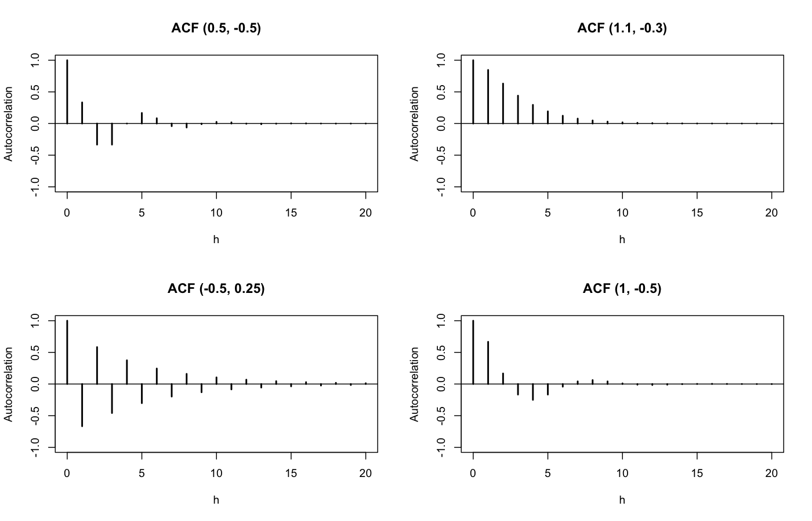
กรณี (0.5, −0.5) มี \(\phi_1^2+4\phi_2=-1.75\) รากเชิงซ้อน \(0.5\pm1.323i\) (modulus 1.414) ACF คือ 0.333, −0.333, −0.333, 0 เป็นคลื่นที่หดเร็ว กรณี (1.1, −0.3) มีค่า 0.01 รากจริง 2 และ 1.667 ACF คือ 0.846, 0.631, 0.440, 0.295 บวกทั้งหมดและลดแบบเลขชี้กำลังคล้าย AR(1) ที่ φ บวก กรณี (−0.5, 0.25) มีค่า 1.25 รากจริง −1.236 และ 3.236 ACF คือ −0.667, 0.583, −0.458, 0.375 สลับเครื่องหมายและลดช้าคล้าย AR(1) ที่ φ ลบ และกรณี (1, −0.5) มีค่า −1 รากเชิงซ้อน \(1\pm i\) (modulus 1.414) ACF คือ 0.667, 0.167, −0.167, −0.25 ลงไปติดลบราว lag 3–5 แล้วกลับมาใกล้ศูนย์ ข้อสรุปคือรากจริงให้ ACF ที่ดูเหมือน AR(1) ส่วนรากเชิงซ้อนให้คลื่น และไม่ว่ากรณีใด ACF ก็ไม่ตัดเป็นศูนย์ที่ lag 2 จึงบอกไม่ได้ว่า p = 2 ข้อสังเกตคือกรณีที่ 3 บนสไลด์คือ (−0.5, 0.25) แต่โค้ด simulation ใน R_codes_2 ใช้ ar = c(-0.5,-0.25) ซึ่งเป็นอีกโมเดลหนึ่ง (รากเชิงซ้อน modulus 2, ρ₁ = −0.4, ρ₂ = −0.05) sample ACF ในส่วนนั้นจึงไม่ตรงกับ population ACF ของกรณีที่ 3
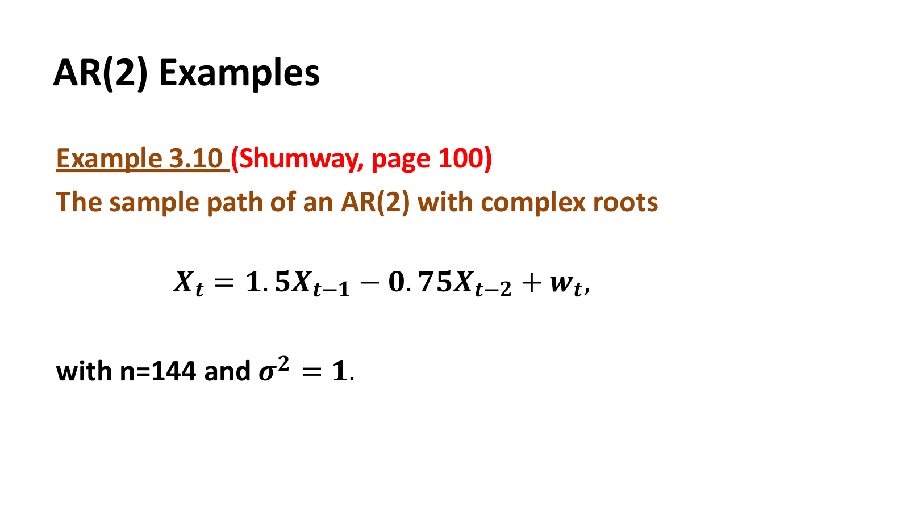
ตัวอย่างจากหนังสือคือ \(X_t=1.5X_{t-1}-0.75X_{t-2}+w_t\) ตรวจสามเหลี่ยมได้ 1.5 − 0.75 = 0.75 < 1, −0.75 − 1.5 < 1 และ |−0.75| < 1 จึงนิ่ง และ \(\phi_1^2+4\phi_2=2.25-3=-0.75<0\) รากเชิงซ้อน \(1\pm0.577i\) modulus 1.155 มุมของรากคือ \(\arctan(0.577)=30^\circ\) ACF จึงวนครบรอบทุก 360/30 = 12 lag อนุกรมขึ้นลงเป็นรอบยาวราว 10–15 ช่วงเวลาคล้ายวัฏจักรธุรกิจ ทั้งที่ไม่มี seasonal จริง population ACF ได้ ρ₁ = 0.857, ρ₃ = 0.161, ρ₆ = −0.422 และกลับมาบวกราว lag 12 ส่วน sample ACF ได้ 0.855, 0.539, 0.169 ที่ lag 1–3 และ −0.419 ที่ lag 6 ใกล้ทฤษฎีมาก บทเรียนคือข้อมูลที่ดูเป็นวัฏจักรไม่จำเป็นต้องมาจาก seasonal อาจเป็น AR(2) ที่มีรากเชิงซ้อน ต่างกันตรงที่รอบของ AR(2) ไม่สม่ำเสมอเพราะ shock ใหม่รบกวนทุกช่วง
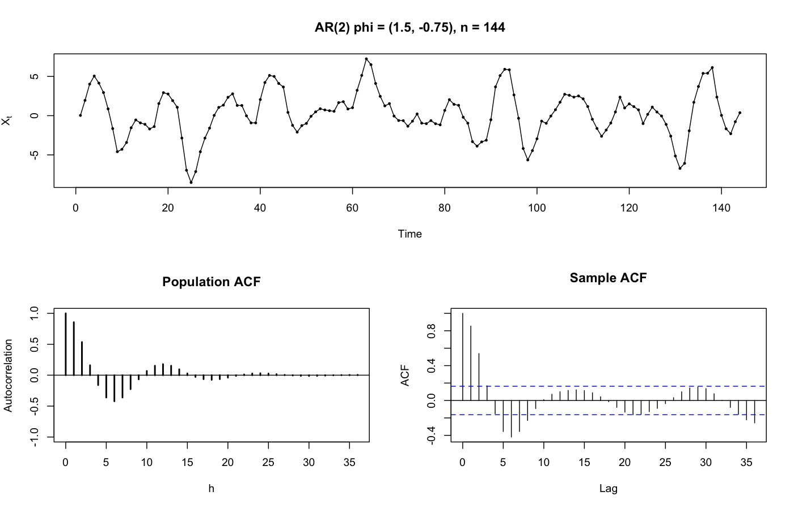
กราฟที่รันซ้ำด้วย ARMAacf(ar = c(1.5,-0.75), ma=0, 50) และ arima.sim(..., n = 144) ยืนยันตัวเลขข้างบน ACF ขึ้นลงเป็นคลื่นรอบละราว 12 lag ทั้งในทฤษฎีและในข้อมูลจำลอง สำหรับ AR(p) ทั่วไปใช้เงื่อนไขรากเดียวกัน คือรากทุกตัวของ Φ(x) ต้องมีค่าสัมบูรณ์หรือ modulus เกิน 1 แต่ไม่มีสามเหลี่ยมสำเร็จรูปให้ใช้ เมื่อ p ≥ 3 บริเวณความนิ่งในปริภูมิของ φ quite abstract จึงต้องหารากด้วยโปรแกรม เช่น polyroot() ใน R และข้อสอบจะมีแค่สมการกำลังสอง18 ACF ของ AR(p) หาได้ด้วย Yule-Walker (Shumway, page 121) และมีรูปเป็นผลรวมของการลดแบบเลขชี้กำลังจากรากจริง กับคลื่นที่หดลงจากรากเชิงซ้อน ข้อเปรียบเทียบที่สำคัญที่สุดของสองบทคือ ACF ของ MA เป็นศูนย์หลัง lag จำนวนจำกัด ส่วน ACF ของ AR ลดลงแบบเรขาคณิตแต่ไม่เป็นศูนย์พอดีที่ lag ใดเลย MA(1) θ = 0.9 มี ρ₂ = 0 พอดี แต่ AR(1) φ = 0.9 มี ρ₂₀ = 0.9²⁰ = 0.12 ยังไม่เป็นศูนย์ sample ACF จึงใช้ตัดสินได้ว่าควรใช้ MA หรือ AR แต่บอก p ไม่ได้ ACF ของ AR จึงไม่มีประโยชน์ในการหา p19

Exercise ท้ายส่วน AR ถามว่าถ้าเอา AR(1) ที่นิ่งแล้วมา difference อีกจะได้อะไร เป็นการฝึกใช้สูตร covariance และเป็นคำเตือนเรื่อง over-differencing ใน Lesson 7
\(\gamma_X(h)=\phi^{|h|}\gamma_0\) โดย \(\gamma_0=\sigma^2/(1-\phi^2)\)
\(\gamma_Y(h)=\mathrm{Cov}(X_t-X_{t-1},X_{t+h}-X_{t+h-1})=2\gamma_X(h)-\gamma_X(h+1)-\gamma_X(h-1)\)
\(\gamma_Y(0)=2\gamma_0-2\phi\gamma_0=2\gamma_0(1-\phi)=\dfrac{2\sigma^2(1-\phi)}{(1-\phi)(1+\phi)}=\dfrac{2\sigma^2}{1+\phi}\)
\(\gamma_Y(h)=\gamma_0\phi^{h-1}(2\phi-\phi^2-1)=-\gamma_0\phi^{h-1}(1-\phi)^2=-\dfrac{\sigma^2(1-\phi)}{1+\phi}\phi^{h-1}\)
Var(Y) = 2/1.5 = 1.333 และ γ_Y(1) = −(0.5/1.5) = −0.333 ได้ \(\rho_Y(1)=-0.25\)
Exercise อีกข้อให้คำนวณและวาด ACF ของ AR(1) สี่ค่า φ ด้วย \(\rho_h=\phi^h\) แล้วดูว่าต้องไปถึง lag ไหนจึงเล็กกว่า 0.05 ซึ่งถือว่า "nearly died out" φ = 0.6 ได้ 0.6, 0.36, 0.216 และต่ำกว่า 0.05 ที่ lag 6 (0.6⁶ = 0.047) φ = −0.6 ได้ −0.6, 0.36, −0.216 สลับเครื่องหมายและต่ำกว่า 0.05 ที่ lag 6 เช่นกัน φ = 0.3 ได้ 0.3, 0.09, 0.027 ต่ำกว่า 0.05 ที่ lag 3 ส่วน φ = 0.95 ได้ 0.95, 0.903, 0.857 และต้องถึง lag 59 จึงต่ำกว่า 0.05 ที่ lag 20 ยังเท่ากับ 0.358 นี่คือเหตุผลที่โจทย์สั่ง "Do out to 20 lags" กราฟแบบนี้ดูเกือบเหมือน ACF ของอนุกรมที่มี trend ใน Lesson 3 ถ้าเห็น ACF ลดช้ามากต้องตรวจความนิ่งด้วย ADF ก่อน ไม่ใช่สรุปว่าเป็น AR(1) ทันที


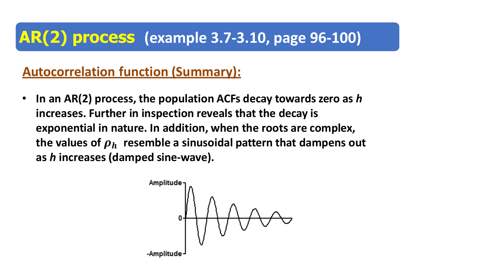
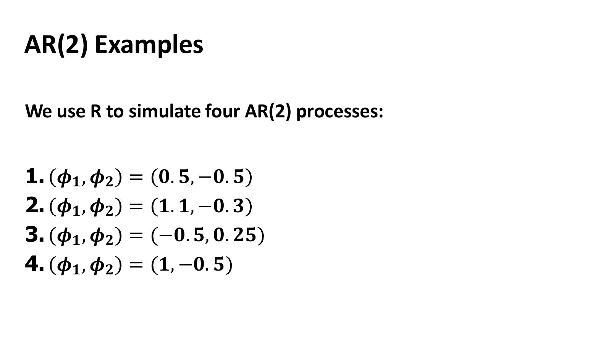
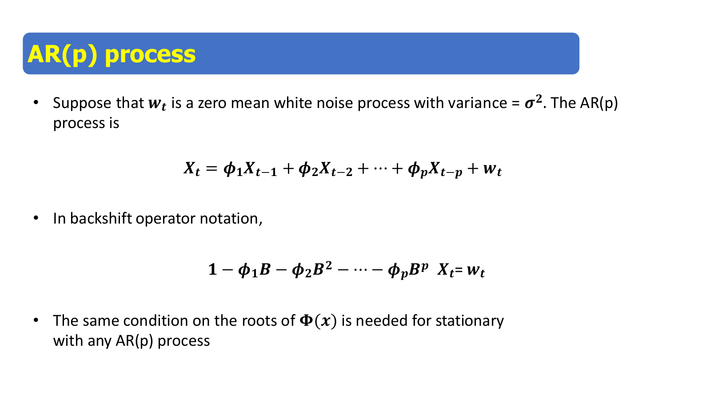


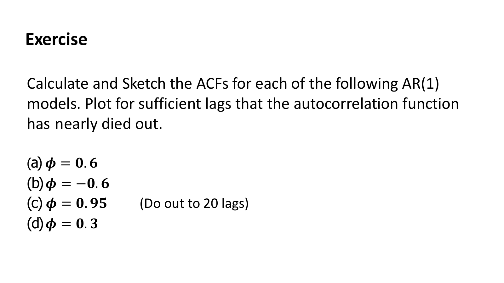
ปัญหาที่ต้องแก้คือ AR(1) φ = 0.9 มี ρ₂ = 0.81 ทั้งที่สมการมีแค่ \(X_{t-1}\) ค่า \(X_{t-2}\) ไม่ได้มีผลต่อ \(X_t\) โดยตรงเลย correlation 0.81 เกิดขึ้นเพราะ \(X_{t-2}\) ส่งผลผ่าน \(X_{t-1}\) ต่อมาถึง \(X_t\) เหมือนการส่งข่าวต่อกันเป็นทอด ๆ ถ้าตัดทางอ้อมผ่าน \(X_{t-1}\) ออก correlation ที่เหลือควรเป็นศูนย์ เครื่องมือที่ตัดทางอ้อมนี้คือ PACF (partial autocorrelation function) ซึ่งต้องจดไว้ เพราะ ACF ไม่เหมาะกับ AR ที่ค่อย ๆ ลด20 สไลด์วางตำแหน่งของ PACF ในขั้นตอนทั้งหมดว่า ทำให้นิ่งด้วย differencing ก่อน แล้วดู ACF และ PACF ของอนุกรมที่ difference แล้ว เพื่อตัดสินว่าต้องมี AR หรือ MA กี่พจน์ ลำดับนี้คือขั้น identification ใน Lesson 7 MA(q) ระบุได้จาก ACF เพราะไม่เป็นศูนย์ถึง lag q แล้ว "drops off" เป็นศูนย์ แต่ AR ต้องมีเครื่องมือที่ทำหน้าที่เดียวกัน
partial correlation คือ conditional correlation คือ correlation ระหว่างสองตัวแปรหลังจากนำผลของตัวแปรอื่นออกไปแล้ว ลองนึกถึง regression ธรรมดาที่ Y มีตัวแปรต้น X₁, X₂, X₃ ความสัมพันธ์ระหว่าง X₁ กับ Y มี X₂ กับ X₃ เจือปนอยู่ ซึ่งเรียกว่า confound partial correlation คือการเอาอิทธิพลของ X₂ และ X₃ ออก21 ตัวอย่างที่รู้จักกันดีคือ Simpson's paradox ในการรับนักศึกษาของ UC Berkeley ช่วงทศวรรษ 197022 ข้อมูลปี 1973 ภาพรวมผู้ชายถูกรับราว 44% ผู้หญิงราว 35% ดูเหมือนลำเอียง แต่เมื่อแยกดูทีละคณะ หลายคณะรับผู้หญิงในอัตราเท่ากันหรือสูงกว่า ความต่างในภาพรวมเกิดเพราะผู้หญิงสมัครคณะที่แข่งขันสูงมากกว่า คณะจึงเป็นตัวแปรที่เจือปนอยู่ และข้อสรุปเปลี่ยนเมื่อนำตัวแปรนั้นเข้ามาพิจารณา วิธีคำนวณบนสไลด์มีสองขั้น ขั้นแรกทำ regression สองสมการ คือ y บน x₁, x₂ และ x₃ บน x₁, x₂ ขั้นสองนำ residuals ของสองสมการมาหา correlation กัน เพราะ we correlate the “parts” of y and x3 that are not predicted by x1 and x2. residual คือส่วนที่ x₁, x₂ อธิบายไม่ได้ correlation ของส่วนที่เหลือจึงเป็นความสัมพันธ์ของ y กับ x₃ ที่ไม่ผ่าน x₁, x₂
ในอนุกรมเวลา partial autocorrelation ระหว่าง \(X_t\) กับ \(X_{t-h}\) คือ correlation หลังจากตัดผลของ \(X_{t-1},\dots,X_{t-h+1}\) ซึ่งเป็นจุดเวลาที่ซ่อนอยู่ตรงกลาง23 ที่ lag 1 ไม่มีจุดคั่นกลาง PACF lag 1 จึงเท่ากับ ACF lag 1 พอดี24 PACF lag 2 คือ covariance ของ \(x_t\) กับ \(x_{t-2}\) เมื่อรู้ \(x_{t-1}\) หารด้วยส่วนเบี่ยงเบนแบบมีเงื่อนไข lag 3 ใส่เงื่อนไขเพิ่มเป็น \(x_{t-1},x_{t-2}\) และ lag สูงขึ้นก็เพิ่มเงื่อนไขไปเรื่อย ๆ ใช้กับ AR(1) φ = 0.9 เมื่อรู้ \(x_{t-1}\) แล้ว \(x_t=0.9x_{t-1}+w_t\) ส่วนที่ยังสุ่มคือ \(w_t\) ซึ่งไม่เกี่ยวกับ \(x_{t-2}\) PACF lag 2 จึงเป็นศูนย์ สไลด์ใช้สัญลักษณ์ \(\phi_{hh}\) โดย φ₁₁ คือ lag 1 และ φ₂₂ คือ lag 2 ตัว φ นี้คล้าย φ ของ AR จึงอาจงงได้25 \(X_h^{h-1}\) คือค่าทำนายของ \(X_h\) จาก regression บน \(X_{h-1},\dots,X_1\) ตัวยกไม่ใช่เลขชี้กำลัง26 แต่เป็นป้ายบอกว่าใช้ตัวแปร h − 1 ตัว และ \(X_0^{h-1}\) คือค่าทำนายของ \(X_0\) จากตัวแปรชุดเดียวกัน จึงได้ \(\phi_{11}=\mathrm{corr}(X_1,X_0)=\rho(1)\) และสำหรับ h ≥ 2 \(\phi_{hh}\) คือ correlation ของส่วนที่เหลือ \(X_h-X_h^{h-1}\) กับ \(X_0-X_0^{h-1}\) ซึ่งเป็นสูตรเดียวกับ residual ของสอง regression ทุกประการ ส่วนที่เหลือทั้งสองเรียกว่า prediction errors และถ้าอนุกรมเป็น normal นิยามจะเทียบเท่ากับ 𝝓𝒉𝒉= 𝒄𝒐𝒓𝒓(𝑿𝟎, 𝑿𝒉|𝑿𝒉−𝟏, 𝑿𝒉−𝟐, … , 𝑿𝟏) คือ correlation แบบมีเงื่อนไข สรุปได้ว่า \(\phi_{hh}\) วัด correlation ระหว่าง \(X_h\) กับ \(X_0\) หลังจากตัดผลเชิงเส้นของ \(X_{h-1},\dots,X_1\) ออกแล้ว
การคำนวณ PACF จริงใช้ Durbin–Levinson ซึ่งต้องทำย้อนหลังและเกี่ยวกับ ρ หลายตัว สูตรนี้ไม่ออกสอบ มีไว้ให้เข้าใจแนวคิด2728 ค่า \(\hat\rho(h)\) ต้องคำนวณเป็น แต่ \(\hat\phi_{hh}\) ไม่ออกสอบ ขอแค่อ่าน output ให้เป็น29 สูตรสำหรับ lag 2 สั้นพอที่จะใช้ตรวจความเข้าใจ คือ \(\phi_{22}=\dfrac{\rho_2-\rho_1^2}{1-\rho_1^2}\)
ρ₁ = 0.9, ρ₂ = 0.81 ได้ \(\phi_{22}=(0.81-0.81)/(1-0.81)=0\) ตัวเศษเป็นศูนย์พอดีเพราะ ρ₂ = ρ₁² ใน AR(1)
ρ₁ = −0.667, ρ₂ = 0.583 ได้ \(\phi_{22}=(0.583-0.444)/(1-0.444)=0.139/0.556=0.25\) เท่ากับ φ₂ พอดี
ρ₁ = −0.497, ρ₂ = 0 ได้ \(\phi_{22}=(0-0.247)/(1-0.247)=-0.328\) ไม่เป็นศูนย์ แม้ ρ₂ = 0
สไลด์ให้ดูรายละเอียดของ AR(1) ใน Example 3.14 (page 106) เหตุผลสั้น ๆ คือใน AR(p) เมื่อรู้ \(X_{t-1},\dots,X_{t-p}\) แล้ว ส่วนที่เหลือคือ \(w_t\) ซึ่งไม่เกี่ยวกับ \(X_{t-p-1}\) หรือเก่ากว่า PACF ที่ lag เกิน p จึงเป็นศูนย์ สองโมเดลที่ใช้ดูคือ \(X_t=0.9X_{t-1}+w_t\) และ \(X_t=-0.5X_{t-1}+0.25X_{t-2}+w_t\) โดยใช้ ARMAacf(..., pacf=TRUE) สำหรับค่าทฤษฎี และ pacf() สำหรับข้อมูลจำลอง30

ทางทฤษฎี AR(1) มี ACF 0.9, 0.81, 0.73 ลดช้า แต่ PACF คือ 0.9 ที่ lag 1 แล้วเป็นศูนย์ตั้งแต่ lag 2 ส่วน AR(2) มี ACF สลับเครื่องหมาย −0.667, 0.583, −0.458 แต่ PACF คือ −0.667 และ 0.25 แล้วเป็นศูนย์ตั้งแต่ lag 3 PACF จึงอ่าน p ได้ตรง ๆ คือ p = 1 และ p = 2 ในโค้ด แกนนอนของ PACF เริ่มที่ lag 1 (x = 1:20) เพราะ PACF ไม่มี lag 0
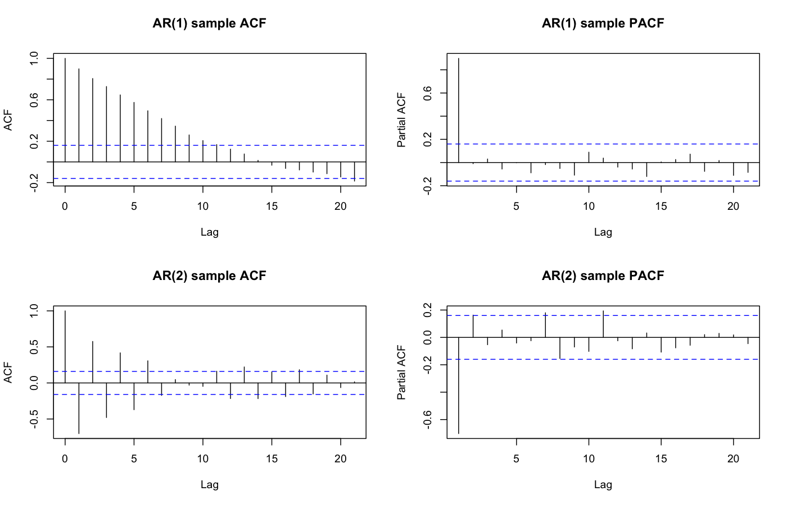
ข้อมูลจำลอง 150 ค่ามีเส้นประที่ \(2/\sqrt{150}=0.163\) AR(1) มี sample PACF 0.899, −0.010, 0.031, −0.056 แค่ lag 1 ทะลุเส้น จึงอ่านได้ p = 1 AR(2) มี sample PACF −0.703, 0.163, −0.053 lag 2 แตะเส้นพอดี ค่าทฤษฎีคือ 0.25 แต่ข้อมูลชุดนี้ได้แค่ 0.163 ในทางปฏิบัติจึงต้องลองทั้ง AR(1) และ AR(2) แล้วเทียบ AIC ใน Lesson 7 เมื่อฟิต arima(a2, order = c(2,0,0)) ได้ ar2 = 0.1641 (s.e. 0.0810) ประมาณ 2 เท่าของ s.e. จึงยังถือว่ามีนัยสำคัญ กรณีคล้ายกันเกิดในห้อง PACF ของ AR(2) มี lag 4 โผล่เล็กน้อย แต่ควรเป็น 0 หลัง lag 231 ข้อมูลจริงไม่เคยสมบูรณ์แบบ ผลทั่วไปของ AR(p) คือ \(\phi_{11},\dots,\phi_{pp}\) ไม่เป็นศูนย์ และ \(\phi_{hh}=0\) ทุก h > p PACF จึง “drop off” หลัง lag p และ PACF can help to determine the order of an AR(p) เหมือนที่ ACF ใช้หา q ของ MA32
คำถามกลับด้านคือ PACF ของ MA เป็นอย่างไร สไลด์อ้าง Example 3.16 (page 107) และให้เงื่อนไข |θ| < 1 ซึ่งเรียกว่า invertible (Lesson 7) MA(1) ที่ invertible เขียนกลับเป็น AR(∞) ได้ คือ \(X_t\) ขึ้นกับค่าในอดีตทุกค่าด้วยน้ำหนักที่ลดลง ไม่มี lag ไหนที่ตัดได้ PACF ของ MA จึงค่อย ๆ ลดลง สไลด์ใช้ \(X_t=w_t-0.9w_{t-1}\) และ \(X_t=w_t+0.5w_{t-1}-0.25w_{t-2}\) ซึ่งในโค้ด R คือ ma = c(-0.9) และ ma = c(0.5,-0.25)

ผลตรงกันข้ามกับ AR33 MA(1) มี ACF −0.497 ที่ lag 1 แล้วเป็นศูนย์ แต่ PACF ติดลบและลดลงช้า ๆ −0.497, −0.328, −0.243, −0.191 MA(2) มี ACF 0.286, −0.190 แล้วเป็นศูนย์ ส่วน PACF สลับเครื่องหมายและลดลง 0.286, −0.296, 0.185, −0.151 PACF ของ MA(q) มีสูตร แต่ซับซ้อนจนหนังสือไม่เขียน34 จึงจำแค่รูปร่าง

sample ของ MA(1) ได้ ACF −0.497 แล้วตกลงในเส้นทันที (0.002, −0.016) ส่วน PACF −0.497, −0.325, −0.262, −0.244 ทะลุเส้นหลาย lag ก่อนลดลง MA(2) ได้ ACF 0.220, −0.187 ทะลุเส้นแล้ว lag 3 = 0.091 อยู่ในเส้น ส่วน PACF 0.220, −0.247, 0.220, −0.181 ยังทะลุเส้นถึง lag 4 รูปแบบ "ACF ตัด PACF ลาก" จึงชัดเจน สไลด์สรุปว่า The PACF for an MA process behaves much like the ACF for an AR process of the same order. และให้ตารางจากหนังสือหน้า 10835
| ACF | PACF | |
|---|---|---|
| AR(p) | tail off (ลดลงช้า อาจสลับเครื่องหมายหรือเป็นคลื่น) | เป็นศูนย์หลัง lag p |
| MA(q) | เป็นศูนย์หลัง lag q | tail off |
| ARMA(p,q) | tail off | tail off |
วิธีจำคือตัวที่ตัดบอกอันดับ ACF ตัดบอก q ของ MA และ PACF ตัดบอก p ของ AR แถว ARMA เป็นการบ้าน36 คำตอบมาตรฐานคือ tail off ทั้งคู่ ไม่มีตัวไหนตัด จึงอ่าน p กับ q จาก ACF และ PACF ไม่ได้ ARMA ยากเพราะสองส่วนผสมกัน37 ลองดู ACF ทางทฤษฎีของ ARMA(1,1) ที่ θ = 0.25 สี่ชุด
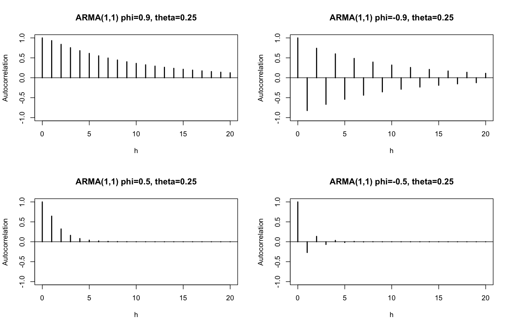
φ = 0.9 ได้ 0.931, 0.838, 0.754 φ = −0.9 ได้ −0.822, 0.740, −0.666 φ = 0.5 ได้ 0.643, 0.321, 0.161 และ φ = −0.5 ได้ −0.269, 0.135, −0.067 ทุกชุดหาร lag ติดกันได้ φ พอดีตั้งแต่ lag 2 เช่น 0.838/0.931 = 0.9 แต่ ρ₁ ไม่เท่ากับ φ (0.931 ไม่ใช่ 0.9) เพราะส่วน MA เปลี่ยนเฉพาะ lag แรก ถ้าเห็นแค่กราฟ ACF จึงแยก ARMA(1,1) ออกจาก AR(1) ได้ยาก เครื่องมือที่ช่วยคือ EACF (extended ACF) ซึ่งเป็นการบ้านให้ไปค้น38 EACF เป็นตารางที่แถวคืออันดับ AR (p = 0, 1, 2, …) และคอลัมน์คืออันดับ MA (q = 0, 1, 2, …) ช่อง x คือยังมี autocorrelation เหลือ ช่อง o คือไม่มี วิธีอ่านคือหามุมบนซ้ายของสามเหลี่ยมที่เต็มไปด้วย o มุมนั้นคือ (p, q) ที่แนะนำ ใน R ใช้ eacf() จาก package TSA เมื่อจำลอง ARMA(1,1) ที่ φ = 0.6 และ θ = 0.8 จำนวน 200 จุด มุมบนซ้ายของสามเหลี่ยม o อยู่ที่แถว 1 คอลัมน์ 1 จึงแนะนำ ARMA(1,1) ตรงกับโมเดลจริง แม้แถว 2 คอลัมน์ 2 จะมี x หนึ่งช่องที่ไม่ควรมี แต่เมื่อจำลอง ARMA(2,2) สามเหลี่ยม o ที่สะอาดที่สุดเริ่มที่แถว 0 คอลัมน์ 3 ซึ่งแนะนำ MA(3) ส่วนมุม (2,1) มี x ที่แถว 3 คอลัมน์ 3 ขวางอยู่ EACF ของตำราดูสวยมาก แต่กับข้อมูลจริงมักดูแย่39 วิธีนี้ใช้กันเมื่อราว 20 ปีก่อน ช่วง 10 ปีหลังใช้ auto.arima แทน40 ขั้นตอนโดยสรุปจึงเป็น ACF ใช้หา q PACF ใช้หา p และถ้ามีทั้งสองส่วนใช้ EACF หรือ auto.arima41
> set.seed(2603630) > eacf(arima.sim(list(order=c(1,0,1), ar=0.6, ma=0.8), n=200)) AR/MA 0 1 2 3 4 5 6 7 8 9 10 11 12 13 0 x x x x o o o o o o o o o o 1 x o o o o o o o o o o o o o 2 x o x o o o o o o o o o o o 3 x x x o o o o o o o o o o o 4 x x x o o o o o o o o o o o > eacf(arima.sim(list(order=c(2,0,2), ar=c(0.5,-0.5), ma=c(0.8,-0.2)), n=200)) AR/MA 0 1 2 3 4 5 6 7 8 9 10 11 12 13 0 x x x o o o o o o o o o o o 1 x x x o o o o o o o o o o o 2 x o o o o o o o o o o o o o 3 x o o x o o o o o o o o o o 4 x o x x o o o o o o o o o o
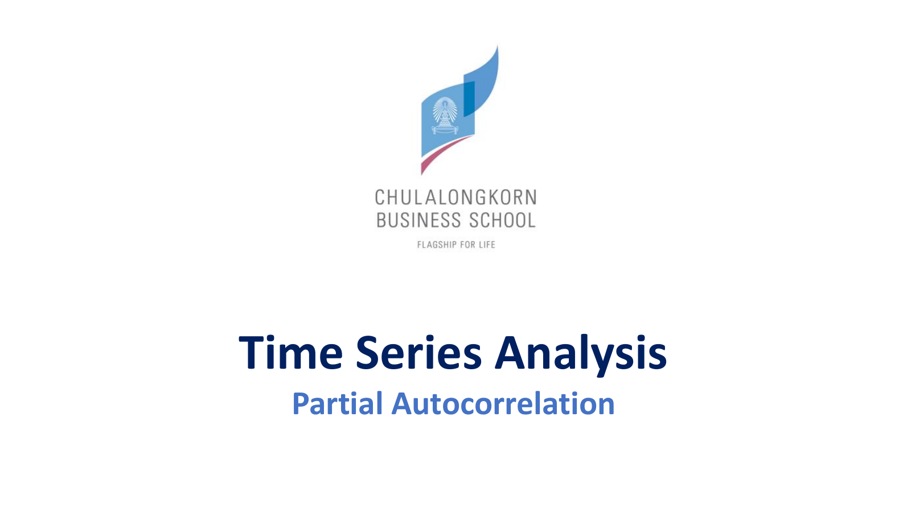
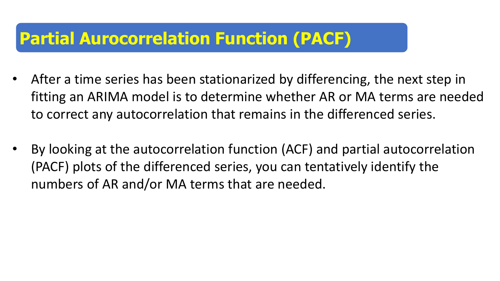
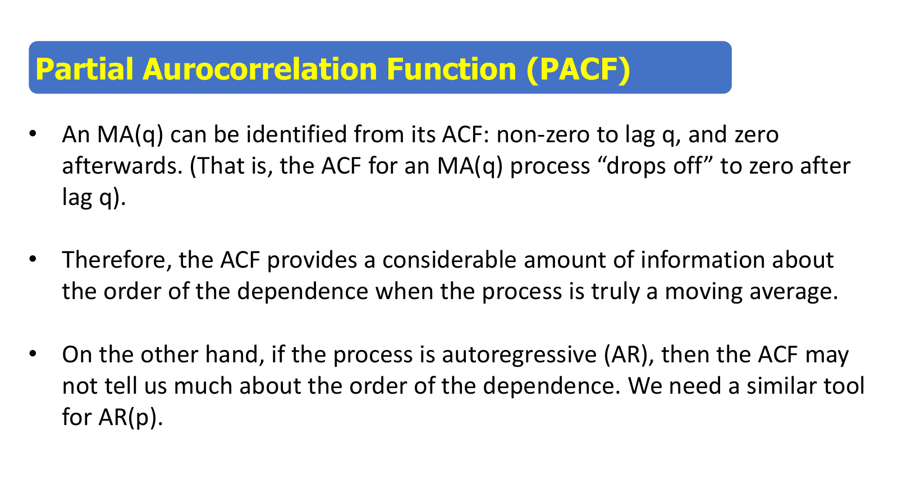
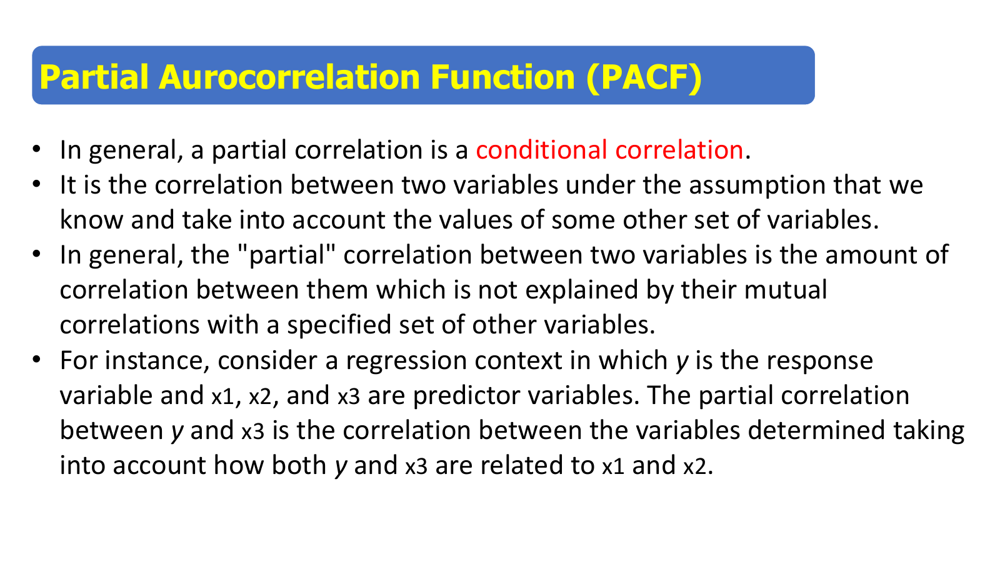
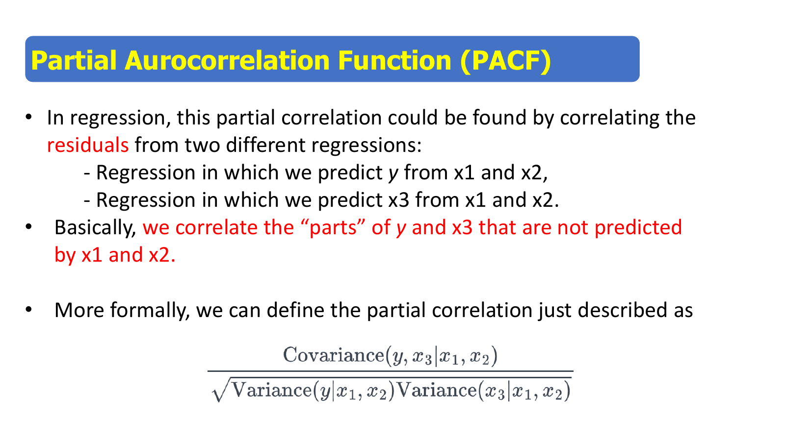


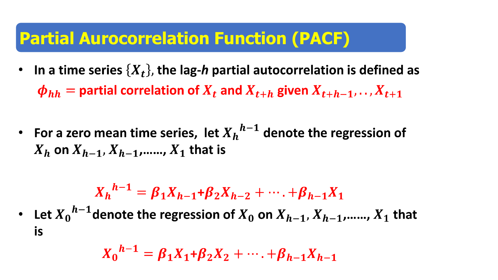
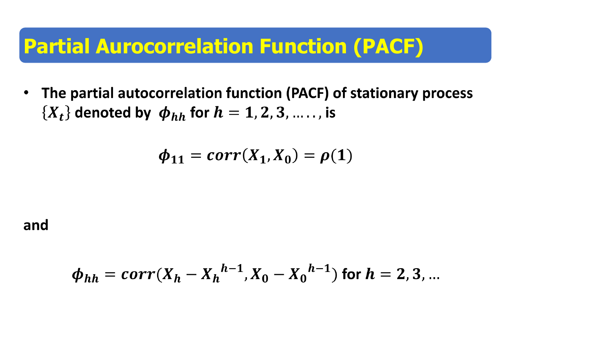
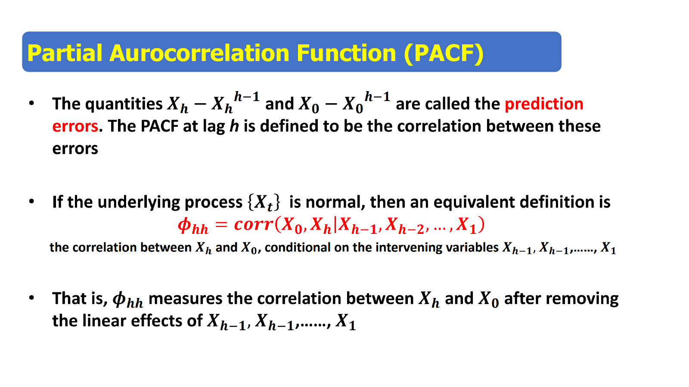

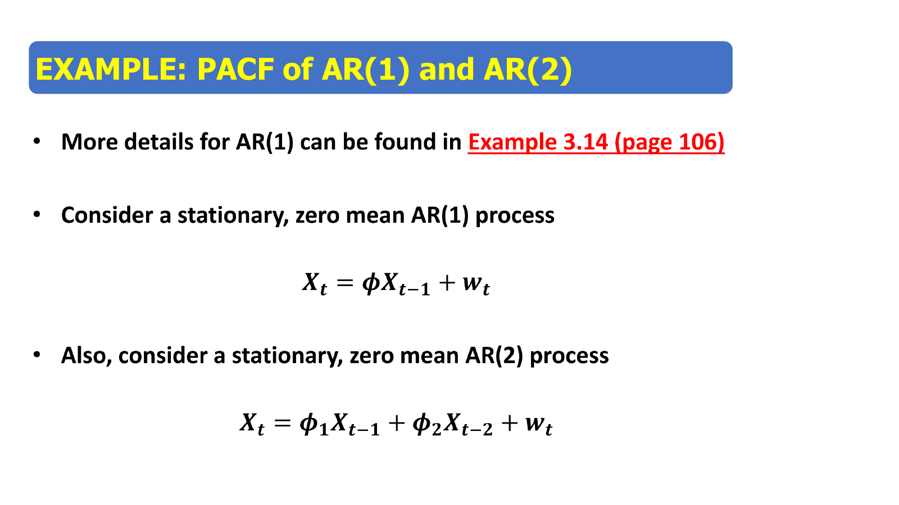

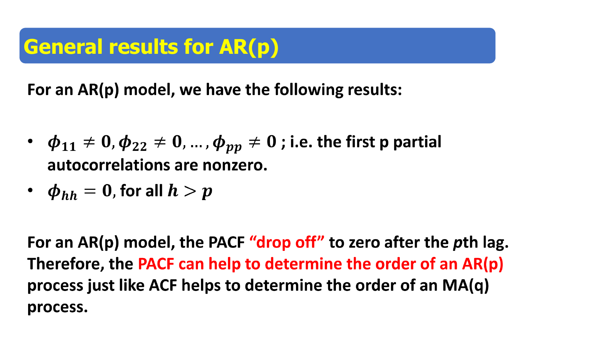
p" loading="lazy">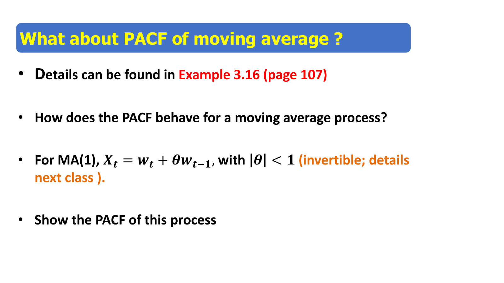
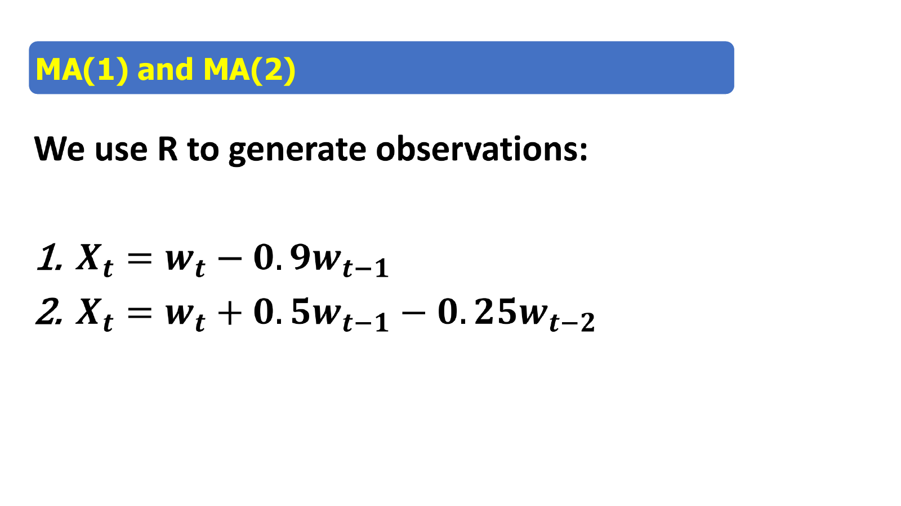

ทุกโมเดลจนถึงตอนนี้ใช้ได้กับข้อมูลนิ่งเท่านั้น แต่ข้อมูลจริงส่วนใหญ่มี trend เช่น อุณหภูมิโลกใน Lesson 3 หรือยอดขาย Sales ใน Lesson 4 ส่วนนี้เติมตัว I (Integrated) เพื่อให้ Box-Jenkins ใช้กับข้อมูลที่มี trend ได้ การเติม differencing ทำให้ได้ตระกูลโมเดลที่ใหญ่ขึ้นมาก ชื่อเต็มคือ autoregressive integrated moving average ซึ่งแค่เติม I หรือ d เข้าไป42 คำว่า integrated มาจากทิศกลับของ differencing ถ้า \(\nabla X_t\) เป็น ARMA ค่า \(X_t\) ได้จากการรวมสะสม \(\nabla X_t\) กลับขึ้นไป แบบจำลอง trend คือ \(X_t=\mu_t+Y_t\) โดย \(\mu_t\) เป็น trend ที่กำหนดแน่นอน และ \(Y_t\) นิ่งมี mean 0 ถ้า \(\mu_t=\beta_0+\beta_1t\) (linear) difference ครั้งเดียวพอ ถ้า \(\mu_t=\beta_0+\beta_1t+\beta_2t^2\) (quadratic) ต้องสองครั้ง วิธีจำคือจำนวนจุดหักของพหุนาม ดีกรี n หักได้ n − 1 ครั้ง43 เส้นตรงไม่มีจุดหักจึงใช้ d = 1 พาราโบลาหักหนึ่งครั้งจึงใช้ d = 2 ข้อสอบเก่าเคยให้พิสูจน์ว่าทำไม quadratic trend ไม่นิ่ง และทำไมต้อง difference สองครั้ง44
\(Y_t=\beta_0+\beta_1t+\beta_2t^2+w_t\)45
\(E(Y_t)=\beta_0+\beta_1t+\beta_2t^2\) ขึ้นกับ t ขัดเงื่อนไข mean คงที่ของความนิ่ง
\(t^2-(t-1)^2=2t-1\) จึงได้ \(\nabla Y_t=\beta_1+\beta_2(2t-1)+w_t-w_{t-1}\) mean \(=\beta_1+\beta_2(2t-1)\) ยังขึ้นกับ t เป็นเส้นตรง46
\((2t-1)-(2t-3)=2\) จึงได้ \(\nabla^2Y_t=2\beta_2+w_t-2w_{t-1}+w_{t-2}\) mean \(=2\beta_2\) คงที่ และ variance \(=6\sigma^2\) คงที่ จึงไม่มี trend และถือว่านิ่ง47
อนุกรมเป็น ARIMA ถ้า difference ครั้งที่ d แล้ว \(\nabla^dX_t\) เป็น ARMA ที่นิ่ง ค่าที่กำหนดโมเดลมีสามค่า p คือจำนวนพารามิเตอร์ของ AR q คือจำนวนพารามิเตอร์ของ MA ส่วน d ไม่ใช่จำนวนพารามิเตอร์ แต่เป็นจำนวนครั้งที่ difference48 ARIMA(1,1,1) จึงมีพารามิเตอร์ที่ต้องประมาณสองตัวคือ φ กับ θ ไม่ใช่สามตัว และทุกครั้งที่ difference ข้อมูลหายไปหนึ่งจุด เช่น 40 จุดเหลือ 3949 นิยามบนสไลด์คือ ARIMA(p,d,q) ที่ \(\nabla^dX_t=(1-B)^dX_t\) เป็น ARMA(p,q) จึงเขียนได้ \(\Phi(B)(1-B)^dX_t=\theta(B)w_t\) ต่างจาก ARMA แค่ตัว \((1-B)^d\) ซึ่งเติมเพราะ \(X_t\) เองนิ่งไม่พอให้ ARMA จัดการได้50 บางเว็บเขียนเป็น \(\Phi(B)\nabla^dX_t\) ซึ่งเป็นอันเดียวกัน51 ต้องระวังสองเรื่อง เรื่องแรก \(\nabla^d\) ไม่ใช่ยกกำลังของตัวเลข แต่เป็นการทำ difference d ครั้ง เรื่องที่สอง \((1-B)^2=1-2B+B^2\) ให้ \(X_t-2X_{t-1}+X_{t-2}\) ซึ่งไม่ใช่ \(1-B^2\) ที่ให้ \(X_t-X_{t-2}\)52
ถ้า \(E(\nabla^dX_t)=\mu\) ไม่เป็นศูนย์ ให้เติมค่าคงที่ \(\alpha=\mu(1-\phi_1-\dots-\phi_p)\) ซึ่งเป็นสูตรเดียวกับ intercept ของ AR ใน Lesson 5 เช่น ARIMA(1,1,0) ที่ \(\nabla X_t\) มี mean 2 และ φ = 0.5 ได้ α = 2(0.5) = 1 แปลว่า X เพิ่มขึ้นเฉลี่ย 2 หน่วยต่อช่วง ซึ่งเรียกว่า drift สไลด์เน้นว่าในข้อมูลจริง differencing order d > 2 แทบไม่ต้องใช้ และส่วนใหญ่ taking one difference or occasionally two differences ก็พอ บางครั้งหลัง log และ d = 3 จะไม่ออกสอบ53 ARIMA ครอบคลุมทุกโมเดลที่เรียนมา AR(p) = ARIMA(p,0,0), MA(q) = ARIMA(0,0,q), ARMA(p,q) = ARIMA(p,0,q), ARI(p,d) = ARIMA(p,d,0) และ IMA(d,q) = ARIMA(0,d,q) ซึ่งไม่ใช่เรื่องสำคัญมาก54 แต่ต้องระวังลำดับตัวเลขใน IMA(d,q) ที่ d มาก่อน ต่างจาก ARIMA(0,d,q) ที่ d อยู่กลาง อีกสองครั้งจะเรียน SARIMA ซึ่งรวม ARIMA ไว้ด้วย และเป็นโมเดลสุดท้ายของ Box-Jenkins55

แนวข้อสอบที่ชอบออกคือ "ดูเหมือน AR(2) แต่ไม่ใช่" คือให้สมการที่ดูเหมือนโมเดลหนึ่ง แล้วถามว่าเป็นโมเดลอะไรจริง ต้องตรวจเงื่อนไขสามเหลี่ยมก่อน มิฉะนั้นจะโดนหลอก56 วิธีคือย้าย X ไปซ้าย w ไปขวา เขียนด้วย B แล้วแยกตัวประกอบ ถ้ามีวงเล็บ \((1-B)\) ออกมา นั่นคือ d
φ₁ + φ₂ = 1.7 − 0.7 = 1 ไม่น้อยกว่า 1 จึงไม่ใช่ AR(2) ที่นิ่ง57
\(X_t-1.7X_{t-1}+0.7X_{t-2}=w_t\) ได้ \((1-1.7B+0.7B^2)X_t=w_t\)
หาสองจำนวนที่บวกกันได้ 1.7 และคูณกันได้ 0.7 คือ 1 กับ 0.7 จึงได้ \((1-0.7B)(1-B)X_t=w_t\) ตรวจ: \(1-B-0.7B+0.7B^2=1-1.7B+0.7B^2\)
\((1-B)X_t=\nabla X_t\) จึงได้ \((1-0.7B)\nabla X_t=w_t\) คือ \(\nabla X_t\) เป็น AR(1) φ = 0.7 วงเล็บ \((1-B)\) คือ d ไม่ต้องไปแก้หาราก58
\((1-1.5B+0.5B^2)X_t=(1-B+0.25B^2)w_t\) ดูเหมือน ARMA(2,2) แต่ไม่ใช่60
บวกได้ 1.5 คูณได้ 0.5 คือ 1 กับ 0.5: \((1-0.5B)(1-B)\)
\(1-B+0.25B^2=(1-0.5B)^2\) ตรวจ: \(1-0.5B-0.5B+0.25B^2\)
\((1-0.5B)(1-B)X_t=(1-0.5B)(1-0.5B)w_t\) ตัด \((1-0.5B)\) ทั้งสองข้างแล้วเหลือ 1 − B61 ได้ \((1-B)X_t=(1-0.5B)w_t\)
IMA(1,1) คือ ARIMA(0,1,1) \(X_t=X_{t-1}+w_t-\theta w_{t-1}\) หรือ \((1-B)X_t=(1-\theta B)w_t\) ในข้อสอบให้เขียน \((1-B)X_t\) เพื่อระบุ d ชัด ๆ62 สไลด์บอกว่าเป็นโมเดลที่นิยมมากในเศรษฐศาสตร์ และถ้า θ = 0 จะเหลือ \(X_t=X_{t-1}+w_t\) คือ random walk ความหมายคือวันนี้เท่ากับเมื่อวาน บวก shock ใหม่ และหัก shock เมื่อวานบางส่วน ใน Lesson 7 จะเห็นว่าค่าพยากรณ์ของ IMA(1,1) เท่ากับ simple exponential smoothing ใน Lesson 4 ที่ α = 1 − θ

อนุกรม \(X_t\) เดินขึ้นลงเป็นช่วงยาวเหมือน random walk และ sample ACF ลดลงช้ามาก ยังเกิน 0.2 ถึงราว lag 12 ซึ่งเป็นลักษณะของอนุกรมไม่นิ่ง ส่วน \(\nabla X_t\) แกว่งรอบศูนย์ และ ACF มีแท่งเดียวที่ lag 1 ติดลบราว −0.4 แล้วอยู่ในเส้น ค่าทฤษฎีคือ \(-\theta/(1+\theta^2)=-0.5/1.25=-0.4\) ตรงกัน จึงสรุปได้ว่า \(\nabla X_t\) เป็น MA(1) และ \(X_t\) เป็น ARIMA(0,1,1)63 IMA(2,2) คือ ARIMA(0,2,2) \((1-B)^2X_t=(1-\theta_1B-\theta_2B^2)w_t\) ต้อง difference สองครั้งจึงเป็น MA(2) กระจายด้านซ้ายได้ \(X_t-2X_{t-1}+X_{t-2}\) ตรงกับ \(\nabla^2X_t\) จาก Lesson 5

อ่านสามแถวตามลำดับ64 \(X_t\) ไม่เป็นเส้นตรงแต่โค้ง ขึ้นจากราว 0 ไปถึงราว 400–500 แล้วลง ACF ใกล้ 1 ทุก lag \(\nabla X_t\) ยังดูเหมือนมี trend ขึ้นแล้วลงเป็นช่วงยาว ACF ยังลดช้า difference ครั้งเดียวจึงไม่พอ ส่วน \(\nabla^2X_t\) แกว่งรอบศูนย์ไม่มี trend ACF ทะลุเส้นที่ lag 1 และ 2 แล้วอยู่ในเส้น จึงเป็น MA(2) และ \(X_t\) เป็น ARIMA(0,2,2) วิธีอ่านนี้คือแนวควิซที่จะให้กราฟแบบนี้แล้วให้ทายว่าเป็นโมเดลอะไร โดยไม่ออก d = 365 ขั้นตอนคือ difference ทีละครั้งจนกว่า ACF จะไม่ลดช้า แล้วอ่าน q จาก ACF ของอนุกรมสุดท้าย


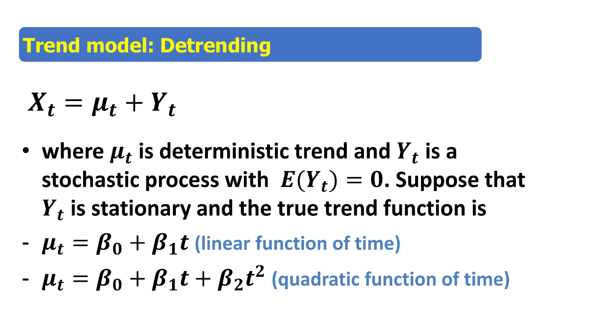
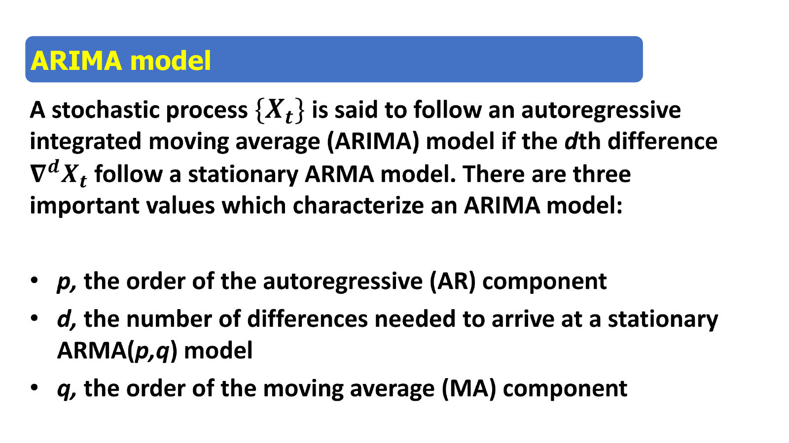


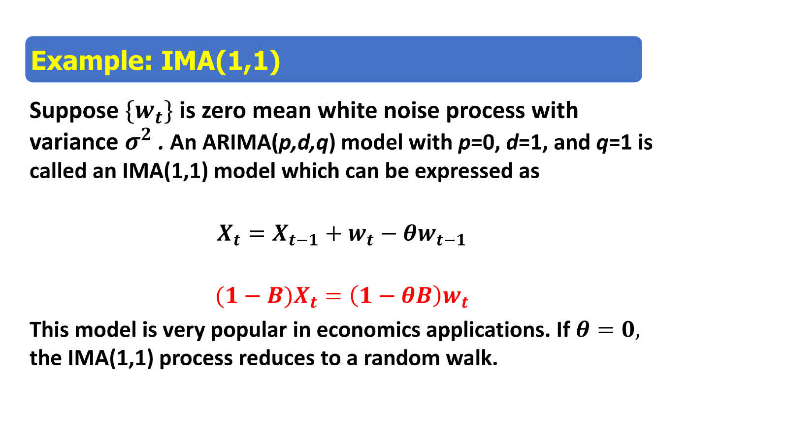
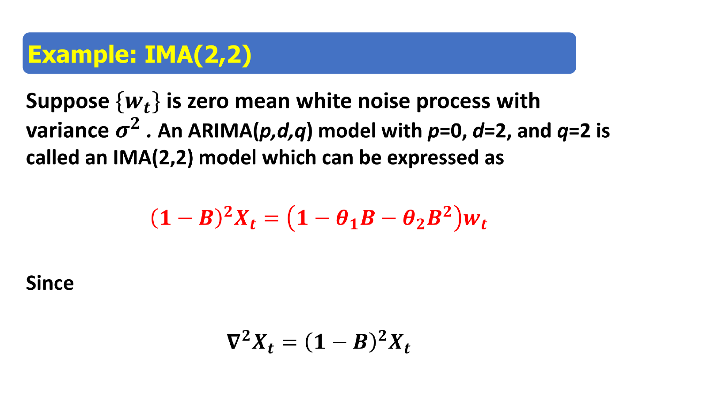
ลองฝึกต่อในแบบฝึก Lesson 6 หรืออ่านต่อ Lesson 7 — ARIMA identification และ estimation
ตัวเลขยกในเนื้อหาชี้มาที่รายการนี้ แต่ละรายการระบุคลาสและนาทีของคลิป พร้อมถ้อยคำในคลิปเมื่อมี
| หน้า | เนื้อหา | อยู่ในตอน |
|---|---|---|
| 1 | ปก Model for Stationary Time Series (Part 2) | etc — ปก |
| 2–15 | ทบทวน MA, AR, เงื่อนไขความนิ่ง, ARMA, AR(2) characteristic polynomial และสามเหลี่ยม | ตอน 1 |
| 16–26 | ACF ของ AR(2), Yule-Walker, ตัวอย่าง, AR(p) เทียบ MA(q), Exercise | ตอน 2 |
| 27–43 | PACF, นิยาม φ_hh, Durbin–Levinson, PACF ของ AR และ MA, ตารางสรุป | ตอน 3 |
| 44–55 | ARIMA(p,d,q), Examples (a) (b), IMA(1,1) และ IMA(2,2) | ตอน 4 |
แหล่งอื่นที่ใช้: Class 6 ทั้งคาบ (0:00–2:08), Class 7-2 ที่ 0:21 (การเขียน B เป็น x), ไฟล์ R_codes.txt และ EXERCISE.pdf (CLASS 6), R_codes_2.txt (CLASS 5)